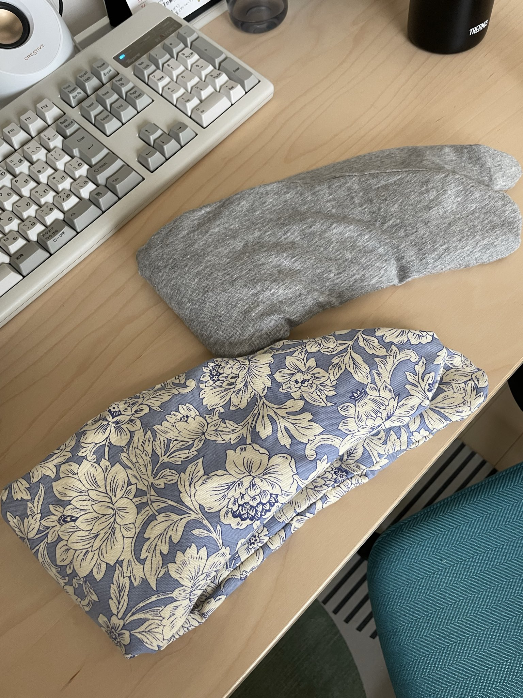
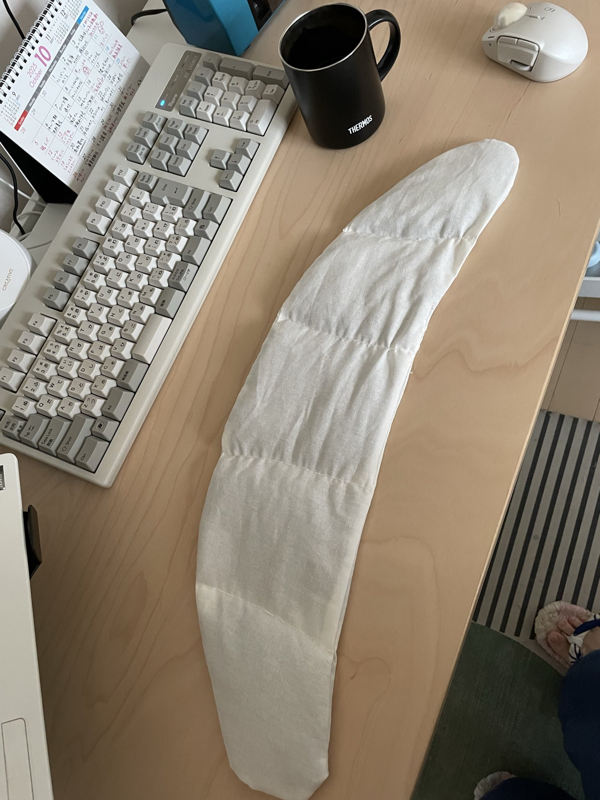
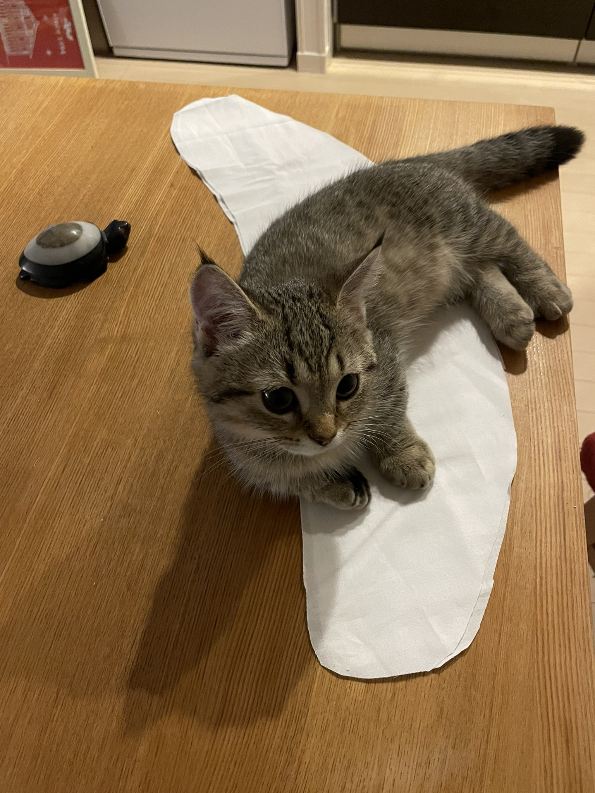
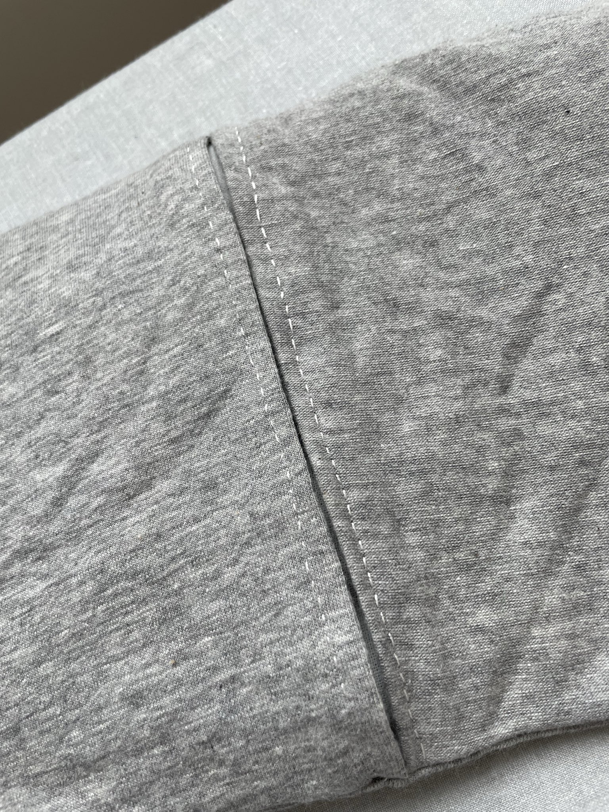

そろそろ寒くなってきた。電子レンジで何度も温められる、小豆ピローが作りたい。
今せっかく裁縫をしているので、その息抜きに作れないかと思って、ちょっとやってみた。
参考にしたのは手元にあった『ハンドメイドのホームウエア＆こもの』（朝日新聞出版,2021）。
友人がこの本を参考にしてブラジャーを作っており、わたしも挑戦したく図書館から借りていた。
これはコロナ禍に発売されている本で、今は流通していないものだと思う。しかしわたしと同じように「小豆ピローが作りたい」ニーズをお持ちであれば、この本をわざわざ買わなくてもよいかもしれない。
いま手元に似たようなものをお持ちである場合は、その構造をよく見て、まねして作ればきっと同じようなものができる。
そして何より、自分で工夫して作った方が楽しい。
まずは完成品を
▼ 先にお見せすると、完成品はこんな感じである

妻のとわたしのを2個作った。

パーツは「本体」と「カバー」に分かれており、「本体」の中に小豆およそ500gが入っている。
小豆が動かないように本体の中でブロッキングしている。各ブロックごとに100gほど小豆が入っていることになる。
とりあえず作ってみる
本に型紙がついていたが、見てみるとそれを使うまでのものでもなさそうだ。要は肩にかけられればいいのだ。
布を肩にかけたとき、鎖骨の下くらいに端があたり、ゆるくカーブを描いて首の後ろを通る。奇しくもビーンズ状になった布を表・裏2枚作る。
生地は安いシーチングにした。
そうそう、一応電子レンジでの発火を防ぐため、プラスチック素材はなるべく使わないようにした。小豆ピローをそこまで加熱させることはないと思うが、念のため。

本体となるシーチング生地をてきとうにカットしたところ。子猫もご満悦。
本体表布・裏布を中表にして縫い、真ん中に10cmほどの返し口を用意する。
そしてその中に小豆をスプーンで入れていく。小豆は本体の端となる部分から入れていく。小豆が入り、そこそこのブロックになったところで、手縫いでブロッキングする。
わたしは手縫いで行なったが、ミシンでもできると思う。ただし、返し口から小豆が漏れ出てくる可能性があるので、取り扱いには注意する。
（これを書いていて思い当たったが、わたしの家には猫がいて、小豆のようなコロコロ転がるものはまずおもちゃとして認識するため、誤飲しないように注意深く取り扱う必要がある。でもそうじゃない家だったら、小豆のひとつぶやふたつぶくらい何てことないのかもしれない。猫がいない生活に慣れていなくて分からない）
ブロッキング作業はすべて本返し縫いで行なった。わたしは本返し縫いが大好きだからだ。
そうして「完成品」の2枚目のような本体ができあがった。ここまでで小一時間くらいか。ミシンを活用するなら15分くらいでできるかもしれない。わたしは手縫いが大好きすぎる。
ニット素材は要注意
妻の小豆ピローのカバーはニット素材で作った。ユザワヤで200円で売られていた端材である。伸縮性があり柔らかく薄いので、妻好みだと思った。
ニット素材はミシンだと中級者・上級者向け、ないしは初心者向け本の最後のほうに出てくるイメージがあるが、手縫いでやればなんてことはない。糸のテンションは自分で調節できるので、生地が波打ったり糸が曲がったりする心配がない。
ただ、今回は少々間違えた。カバーの横サイズを本体とほぼ同じにしてしまったせいで、カバーから本体がちょっと見えるのだ。

ただ、手縫いでステッチを入れられたのがすごくよかったと思う。絹の糸で小さめに入れた。これも本返し縫いだ。
本返し縫いで丁寧に作ったものは洗濯乾燥機にかけてもほつれない。うちの枕カバー、ハンドタオルには手作りのものが多い。すべて手縫いだ。毎日ガンガン洗っているけれど、3年間くらい使っていて大丈夫。
妻のカバーを作ってから自分のカバーを作った。妻のカバー素材製作での失敗を経て、自分のカバーは少し大きめにした。ニット素材でもないし、こちらは充分にカバーとして機能した。
もしこれが気に入ってもらって、秋冬の間なんども作ることになるとしたら、そのときにまたフィットするカバーの大きさや素材を考えようと思う。
というわけで、完成だ（再掲）
実際に電子レンジであたためて使ってみた。本当にあたたかい。これは秋冬の必需品になりそうだ。
妻も大喜びしてくれて、嬉しかった。手作りで喜んでもらえるのが一番嬉しい。
今回の「小豆ピロー」は、1日で充分終わらせられる、ミニ・プロジェクトといったところだった。
わたしはこういうミニ・プロジェクトが好きだ。今のところ服づくりよりも小物づくりのほうが好きかもしれない。
服はその後の着るときのことをどうしてもイメージしてしまって失敗したくない気持ちが先行するが、小物は万一失敗してもリカバリーが効いたり、諦められたりする。その潔さが好きなのかもしれない。
最後に、使った材料をリストにしておく。参考にしている方がいれば、よかったら。
材料リスト
| 品目 |
購入場所 |
数量・サイズ |
価格・備考 |
| 小豆 |
Amazon |
1kg |
約1,300円弱 |
| シーチング生地（本体用） |
ユザワヤ |
60cm × 50cm（1つ分） |
|
| ニット生地／プリント生地（カバー用） |
ユザワヤ |
約65cm × 50cm（1つ分） |
本体よりも気持ち横幅を大きめに |
こういう文章を集めた本『Knitting＆Sewing』を制作中です。応援よろしくお願いします。